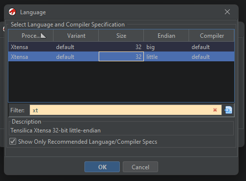

I threw in the bin file found from the S3 bucket into a disassembler.
This is probably the best tool to analyze the binary but with the high cost it may be unavaible to most. I searched for `{` in strings to hunt down the flag.

You will want to set your language to Xtensa Little Endian
It is still hard to pull out the string on this but if you scroll down you will see you string with a message
This is not the best for decomplation but strings are on point
To show all strings
string firmware.bin
You can filter down on URL
strings wwhf2024.bin | grep "\.com" -A 4
Or even use bulk extractor to get more info out of the binary
Flag 2
This is the serial message that will appear after the ascii art. It will take a while for it to pop up
Serial Output
[BADGE] Loading badge config...
[BADGE] Loading bounties...
- Vendors: 26
- Staff: 2
- Tracks: 4
- Badge: 4
- SpecialEvents: 4
[BADGE] WWHF Badge v1.26
[BADGE] 24:58:7C:F4:8E:30
[WiFi] Wi-Fi ready
[WiFi] Station mode started
[WiFi] Sta[WiFi] Station disconnected from AP
[WiFi] Station disconnected from AP
[WiFi] Station disconnected from AP
[WiFi] Station disconnected from AP
[WiFi] Station disconnected from AP
[WiFi] Station disconnected from AP
[WiFi] Station disconnected from AP
[WiFi] Station disconnected from AP
[WiFi] Station disconnected from AP
[WiFi] Station disconnected from AP
[WiFi] Station connected to AP
[WiFi] Station got IP address
[WiFi] Registering device with API server
[BADGE] Writing badge config...
[BADGE] Boounties: Staff 2 | Event 4 | Track 4 | Vendor 26 | Badge 4
[BADGE] Writing bounty tracker...
[WiFi] Registration success
[MQTT] Connecting to MQTT Broker as WrangleCelestial3...
[MQTT] Connected to MQTT broker
[MQTT] Subscribed to broadcast messages
[MQTT] Published registration messages
[BADGE] Added Voltage to index 28: 3.90 volts (59%) [Avg: 3.86 volts (52%)]
[BADGE] Added Voltage to index 29: 3.90 volts (61%) [Avg: 3.86 volts (52%)]
[BADGE] Added Voltage to index 30: 3.90 volts (59%) [Avg: 3.86 volts (52%)]
_╓▄▓▓▓╬╩^``▒_,░µ_ _
,▓▓╬╢╩`╓Ü@D╚╩``╙╙╩Ü=_-╔___
╓▓▓█╬╬Ü#R`Ü ` '|»░`░_
║▓█▓╬▒░░Ü ```` `╙\²
▓█▓█▓╬Ü` '
▓█▓███╬Ü
▐█▓▓██╬╩H
║█▓██▓╬_
'▓▓▓██▓▒╓_ ' ___
█▓▓██╩▀▀▓▄▓_ _______
▀║▓██▓▓Ö╠╬█▌,,`╠╠╩▓DHφ_ __,,,╔▄
'▀%╣▓█╣╠╬▒╠█▓ \_ ╠== ` j
' ║██▓╬▒╣███ `` ,
║▓▓╬╣╫╫▓██▒ `ⁿq∩
╠▓█╣╬║▓███▓_ _ '_
║▓▓█▓▓██████▒_
╠▓█████▌╬▒╬Ü▒__╓_,_
|║▓█▓██╬███╬▀╙^`````╚▒
[╣█▓█╬╣▓█▒▒∩▒__
╙╠▓▓╬╬╣██╣▒_╙` .╓╖__
ⁿ^╠║╬╠╬╩║╝Ñ╬▒__ ╣▓▓███▓▄╖,_
|▒╩╣╬]╠ÜÜ╠╬╬R@╓╦∩ ,▓█████▓█▓▓▓▓▓██▓▄,
`╔╬╬╣▒╩▒▒∩Ü╠Ü║▒¼ _╣▓████▓█▓▓███▓▓▓▓▓▓▓██▄,
,▄╣╬╬Ñ╬▒╬╬╩ÜÜ╩╩ ╔▓▓█▓▓▓▓▓▓▓█▓█▓█▓██▓▓▓▓▓▓██▄
_╓▄██▓╬╬╠▒^ÜÅ╚╙▒[ÜÄ ,╔▓█▓█▓▓▓▓▓▓█▓▓▓███▓█▓▓▓▓▓▓▓▓▓
,▄███████╬╬╬░Ü╙²- ╠_ , ▄▄▓▓█▓██▓▓▓█▓▓▓▓▓▓██▓▓██▓▓█▓▓▓▓▓
▄████████████▓▒^▒UÜ _jÜ`=_ µ▓▓█▓█████▓█▓▓█▓▓▓▓██▓██▓█▓█▓▓▓▓▓█▓
╔█████████████████▓▓@▄▒╔╠╗▄,_╓-__╒,╦╬█████████████▓▓▓▓▓█▓▓▓▓█▓▓▓▓▓▓███▓
╔██████████████████████████████▓██▓▓████████▓████▓▓▓█▓██▓█▓▓██▓█▓▓█▓█▓██
I2luY2x1ZGUgPHN0ZGlvLmg+CiNpbmNsdWRlIDxzdHJpbmcuaD4KI2luY2x1ZGUgPHN0ZGxpYi5oPgoKdm9pZCByKGNoYXIgKnMsIGludCBzaGlmdCkgewogICAgZm9yIChpbnQgaSA9IDA7IHNbaV07IGkrKykgewogICAgICAgIGlmIChzW2ldID49ICdBJyAmJiBzW2ldIDw9ICdaJykgc1tpXSA9ICgoc1tpXSAtICdBJyArIHNoaWZ0KSAlIDI2KSArICdBJzsKICAgICAgICBlbHNlIGlmIChzW2ldID49ICdhJyAmJiBzW2ldIDw9ICd6Jykgc1tpXSA9ICgoc1tpXSAtICdhJyArIHNoaWZ0KSAlIDI2KSArICdhJzsKICAgIH0KfQoKaW50IG1haW4oaW50IGFyZ2MsIGNoYXIgKmFyZ3ZbXSkgewogICAgaWYgKGFyZ2MgIT0gMikgcmV0dXJuIDE7CiAgICBpbnQgc2hpZnQgPSBhdG9pKGFyZ3ZbMV0pOwogICAgY2hhciBmW10gPSAiRlZUe3JMcl90MF8zaTNlbGp1M2UzfSI7CiAgICByKGYsIHNoaWZ0KTsKICAgIHByaW50ZigiJXNcbiIsIGYpOwogICAgcmV0dXJuIDA7Cn0K
[BADGE] Added Voltage to index 31: 3.93 volts (65%) [Avg: 3.86 volts (53%)]
This one is very tricky but is the decryption of the mystery signal. If you monitered MQTT long enough you might have saw a mystery signal event pop up. In the data field is an encrypted blob that contains the flag.
We know that the badge can decrypt the message so we need some way to send it a message so the decryption key can be in memory. We made the badge get extra points by sending it a scan message. (See extra on this was done)